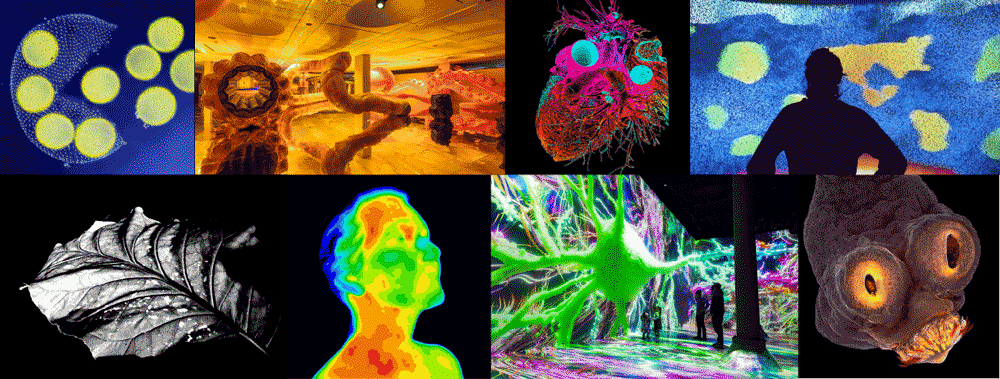
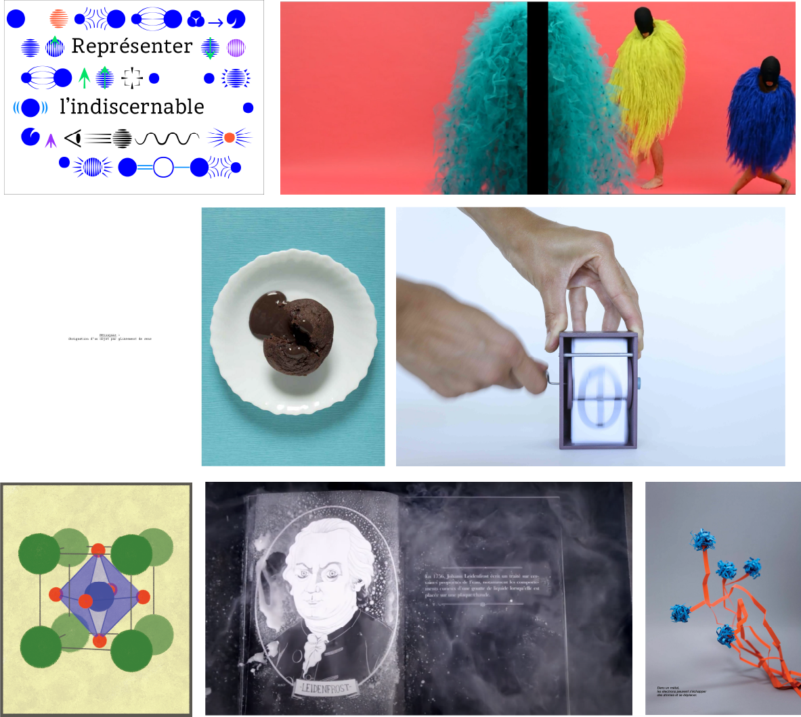
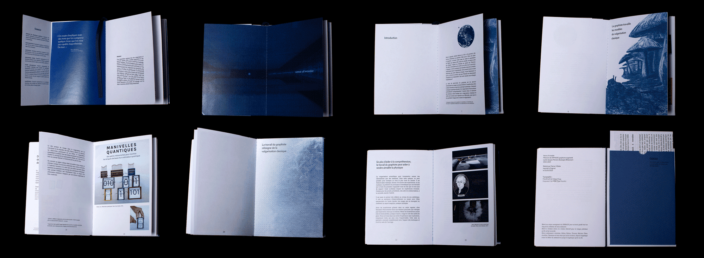

Mon mémoire porte sur la place du graphisme dans la vulgarisation de la physique quantique. D'une science extrêmement abstraite et inaccessible, j'explore diverses interprétations, du plus près de la science jusqu'au plus expérimental.

Mes premières idées de mémoire se sont vite portées sur la science, étant passionée par le sujet depuis toujours. J'ai d'abord exploré la biologie, que j'apprécie particulièrement, notamment les photographies macroscopique et le monde magique qu'elles dévoilent. Cependant, pour la vulgarisation de la biologie, comme pour l'astrologie, les photographies suffisent à faire visualiser au public le sujet. Je me suis donc porté sur les sciences abstraites, les mathématiques et la physique, qui nécessitent une interprétation graphique.

Le choix et l'analyse de mes références sont une grosse part du travail du mémoire. Cela m'a mené au choix de ma problématique : Comment le designer graphique aborde-t-il la vulgarisation d’une science profondément incompréhensible ?
La structure du mémoire révèle une évolution, vers des interprétations de plus en plus personnelles, jusqu'à peut-être même en perdre le sens de la vulgarisation.
